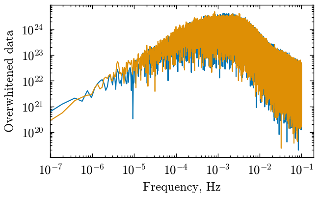
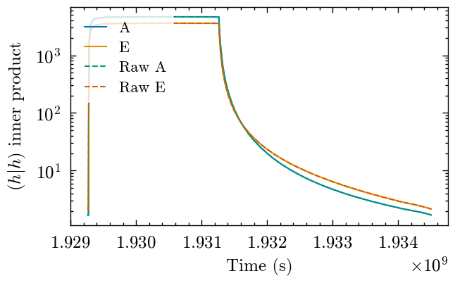
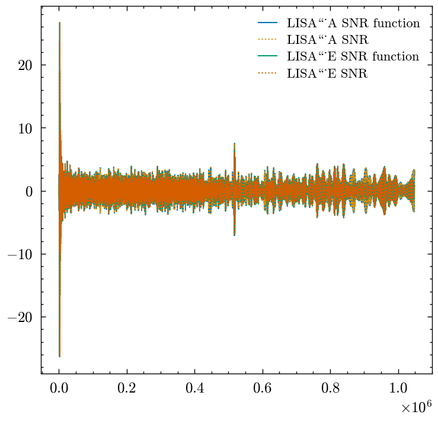
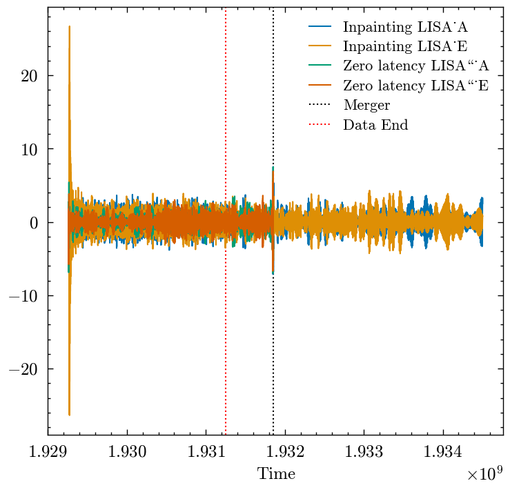
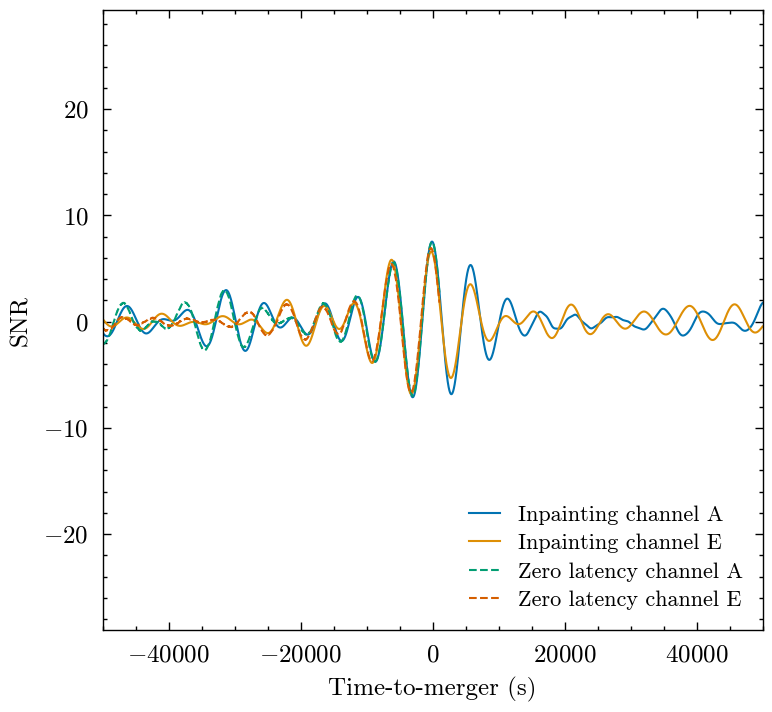

Comparing zero-latency and inpainting SNR calculation#
Here we compare the SNR calculations, and make sure that the function written to do the calcualtion matches what we have writen (the function is a bit of a rabbit warren going through the module, so its best to check here)
import pycbc
import copy
import json
import numpy as np
from pycbc.psd.lisa_pre_merger import generate_pre_merger_psds
from pycbc.waveform.pre_merger_waveform import (
pre_process_data_lisa_pre_merger,
generate_waveform_lisa_pre_merger,
)
import inpainting_utils
from utils import get_snr_series
from matplotlib import pyplot as plt
plt.style.use('../../paper.mplstyle')
/Users/gareth/miniconda3/envs/env_lisa_premerger_sangria/lib/python3.11/site-packages/pycbc/types/array.py:36: UserWarning: Wswiglal-redir-stdio:
SWIGLAL standard output/error redirection is enabled in IPython.
This may lead to performance penalties. To disable locally, use:
with lal.no_swig_redirect_standard_output_error():
...
To disable globally, use:
lal.swig_redirect_standard_output_error(False)
Note however that this will likely lead to error messages from
LAL functions being either misdirected or lost when called from
Jupyter notebooks.
To suppress this warning, use:
import warnings
warnings.filterwarnings("ignore", "Wswiglal-redir-stdio")
import lal
import lal as _lal
No CuPy
No CuPy or GPU PhenomHM module.
No CuPy or GPU response available.
No CuPy or GPU interpolation available.
Top level settings#
You change some of these things, some might work, some might not.
psdname = 'optimistic'
signumber = '0'
data_length = 2592000
zeroed_length = 2**20 # Data length is not the same for zero-latency vs inpainting as we add extra zeroes to inpainting
sample_rate = 0.2
flen_inpaint = int(zeroed_length) // 2 + 1
delta_f_inpaint = 1 / (2**20 * 5) # Delta_f is not the same for zero-latency vs inpainting as we add extra zeroes to inpainting
delta_t = 1 / sample_rate
time_before = 86400*7
Zero-latency filter#
The following cell computes the SNR using the zero-latency filter approach. This requires code from our premerger paper https://icg-gravwaves.github.io/lisa_premerger_paper/README.html to run … Everything else should run off of “standard” installs
This is done to assist making comparison plots later.
## Get the zero-latency SNR series
waveform_params_shared = {
't_obs_start': data_length, # This is setting the data length.
'f_lower': 0.000001,
'low-frequency-cutoff': 0.000001,
'f_final': 0.2 / 2,
'delta_f': 1 / data_length,
'tdi': '1.5',
't_offset': 0,
'cutoff_deltat': 0,
}
data_dict = {
channel: pycbc.types.timeseries.load_timeseries(
f'../../datasets/signal_0.hdf',
group=f"/{channel}",
)
for channel in ['LISA_A', 'LISA_E']
}
for data in data_dict.values():
data._delta_t = 5 # Apparently it is not exactly this in the file, causing issues.
with open('../../datasets/injections.json', 'r') as inj_file:
injections = json.load(inj_file)
waveform_params = injections['0']
waveform_params.update(waveform_params_shared)
lisa_a_zero_phase_kern = generate_pre_merger_psds(
psd_file=f'../../datasets/model_AE_TDI1_SMOOTH_optimistic.txt.gz',
duration=data_length,
sample_rate=sample_rate,
kernel_length=17280
)
psds_for_whitening = {
'LISA_A': lisa_a_zero_phase_kern['FD'],
'LISA_E': lisa_a_zero_phase_kern['FD']
}
cutoff_time=time_before
search_time=86400
window_length=17280
filter_waveform = copy.deepcopy(waveform_params)
filter_waveform.update({
'approximant': 'BBHX_PhenomD',
'mode_array':[(2,2)],
't_offset': 7365189.431698299,
})
data_dict_pp = pre_process_data_lisa_pre_merger(
data_dict,
sample_rate=sample_rate,
psds_for_whitening=psds_for_whitening,
window_length=window_length,
cutoff_time=cutoff_time,
forward_zeroes=17280,
)
data_f_dict = {}
data_f_dict['LISA_A'] = data_dict_pp['LISA_A'].to_frequencyseries()
data_f_dict['LISA_E'] = data_dict_pp['LISA_E'].to_frequencyseries()
waveforms = generate_waveform_lisa_pre_merger(
filter_waveform,
psds_for_whitening,
sample_rate=sample_rate,
window_length=window_length,
cutoff_time=cutoff_time,
forward_zeroes=17280,
)
snrA = pycbc.filter.matched_filter(
waveforms['LISA_A'],
data_f_dict['LISA_A'],
)
snrE = pycbc.filter.matched_filter(
waveforms['LISA_E'],
data_f_dict['LISA_E'],
)
/Users/gareth/miniconda3/envs/env_lisa_premerger_sangria/lib/python3.11/site-packages/BBHX_Phenom.py:287: RuntimeWarning: Input 'f_lower' is lower than the value calculated from 't_obs_start'.
warn(err_msg, RuntimeWarning)
Inpainting#
Now let’s do the same with inpainting.
# We can just use the PSD directly,
# none of the special loading that was needed before
psd = pycbc.psd.from_txt(
f'../../datasets/model_AE_TDI1_SMOOTH_optimistic.txt.gz',
flen_inpaint,
delta_f_inpaint,
delta_f_inpaint,
is_asd_file=False
)
# Get the overwhitened data:
data_dict_resized = copy.deepcopy(data_dict)
for strain in data_dict_resized.values():
strain.resize(zeroed_length)
data_ow_fd = inpainting_utils.pre_process_data_lisa_pre_merger_inpaint(
data_dict_resized,
sample_rate,
{'LISA_A': psd, 'LISA_E': psd},
inpaint_start=int((data_length - time_before) * sample_rate),
inpaint_end=int(data_length*sample_rate) + 10 # 10 samples added for safety at end
)
fig, ax = plt.subplots()
ax.loglog(
data_ow_fd['LISA_A'].sample_frequencies,
abs(data_ow_fd['LISA_A'])
)
ax.loglog(
data_ow_fd['LISA_E'].sample_frequencies,
abs(data_ow_fd['LISA_E'])
)
ax.set_xlabel('Frequency, Hz')
ax.set_ylabel('Overwhitened data')
/Users/gareth/miniconda3/envs/env_lisa_premerger_sangria/lib/python3.11/site-packages/pycbc/types/array.py:390: RuntimeWarning: divide by zero encountered in divide
return self._data.__rtruediv__(other)
Text(0, 0.5, 'Overwhitened data')

Comparing output from development code to functions#
Here we copy/paste the development code, and then produces the same outputs by calling the function defined in inpainting_utils.
First the \((h|h)\) inner product
# Changing waveform length now in this bit to match longer length
filter_waveform['t_obs_start'] = int(zeroed_length / sample_rate + 0.5)
filter_waveform['delta_f'] = delta_f_inpaint
filter_waveform['f_final'] = filter_waveform['f_final'] + delta_f_inpaint / 2 # This is a hack to ensure we get the point at f_final returned
# We'll assume the output of this has the merger at the end!
waveforms = inpainting_utils.generate_waveform_lisa_pre_merger_inpaint(
filter_waveform,
{'LISA_A': psd, 'LISA_E': psd},
sample_rate,
)
hh = {}
# NEW THING: Need time-dependent (h|h).
for channel in waveforms:
mask = pycbc.types.TimeSeries(
np.ones(zeroed_length, dtype=data_dict_resized[channel].dtype),
delta_t=delta_t,
epoch=data_dict_resized[channel]._epoch
)
mask[int((data_length - time_before) * sample_rate):] = 0 # All points after inpaint_start are zeroed in the mask
# PLEASE NOTE, GAPS WOULD BE ADDED HERE INTO THE MASK
invpsd = 1./psd # Here is the same for both ifos, but might be different normally
invpsd[0] = 0 # Don't forget this!!!
maskfs = mask.to_frequencyseries()
waveform = (waveforms[channel].to_frequencyseries() * invpsd**0.5).to_timeseries()
waveform_sq = waveform * waveform
masked_waveform_sq_fs = maskfs * waveform_sq.to_frequencyseries().conj()
masked_waveform_sq_ts = masked_waveform_sq_fs.to_timeseries() # This is what holds (h|h)(t)
hh[channel] = masked_waveform_sq_ts
# Use the compute_hh_inner_product function so that we know
# that the function is the same as the implementation here
hh_function = inpainting_utils.compute_hh_inner_product(
filter_waveform,
{'LISA_A': psd, 'LISA_E': psd},
sample_rate=sample_rate,
inpaint_start=int((data_length - time_before) * sample_rate),
zeroed_length=zeroed_length,
epoch=data_dict_resized[channel]._epoch,
gaps=None
)
for channel in hh.keys():
print(hh_function[channel] == hh[channel])
fig, ax = plt.subplots()
ax.semilogy(hh_function['LISA_A'].sample_times, hh_function['LISA_A'], label='A')
ax.semilogy(hh_function['LISA_E'].sample_times, hh_function['LISA_E'], label='E')
ax.semilogy(hh['LISA_A'].sample_times, hh['LISA_A'], linestyle='--', label='Raw A')
ax.semilogy(hh['LISA_E'].sample_times, hh['LISA_E'], linestyle='--', label='Raw E')
ax.set_xlabel('Time (s)')
ax.set_ylabel('$(h|h)$ inner product')
ax.legend(loc='upper left')
True
True
<matplotlib.legend.Legend at 0x323659250>

That is good! - we have made sure that the above output has
True
True
to indicate exact equality between development code and the function
Now we do the same but with the matched filter outputs:
# Now we can matched-filter
snrs = {}
for channel in waveforms:
snrs[channel] = pycbc.filter.matched_filter(
waveforms[channel],
data_ow_fd[channel],
sigmasq=1,
) / (hh_function[channel]**0.5 * 2**0.5) # Not really sure where the factor of 2 comes from, but it is needed
# Use the get_snr_series function so that we know
# that the function is the same as the implementation here
print(filter_waveform)
snrs_function = get_snr_series(
filter_waveform,
data_ow_fd,
psds_for_whitening={'LISA_A': psd, 'LISA_E': psd},
delta_t=delta_t,
hh=hh_function,
)
fig, ax = plt.subplots(figsize=(4,4))
ax.plot(snrs_function['LISA_A'], label='LISA\_A SNR function')
ax.plot(snrs['LISA_A'], linestyle=':', label='LISA\_A SNR')
ax.plot(snrs_function['LISA_E'], label='LISA\_E SNR function')
ax.plot(snrs['LISA_E'], linestyle=':', label='LISA\_E SNR')
ax.legend(loc='upper right')
for channel in ['LISA_A', 'LISA_E']:
print(snrs_function[channel] == snrs[channel])
{'mass1': 1000000.0, 'mass2': 1000000.0, 'spin1z': 0, 'spin2z': 0, 'additional_end_data': 1050, 'distance': 27658.011507544677, 'eclipticlongitude': 3.448296944257913, 'eclipticlatitude': 0.44491231446252155, 'inclination': 0.9238365050097769, 'polarization': 3.4236020095353483, 'coa_phase': 2.661901610522322, 'tc': 1931852406.9997194, 'fullband_snr': 1975.4707206749447, 't_obs_start': 5242880, 'f_lower': 1e-06, 'low-frequency-cutoff': 1e-06, 'f_final': 0.10000009536743165, 'delta_f': 1.9073486328125e-07, 'tdi': '1.5', 't_offset': 7365189.431698299, 'cutoff_deltat': 0, 'approximant': 'BBHX_PhenomD', 'mode_array': [(2, 2)]}
/Users/gareth/miniconda3/envs/env_lisa_premerger_sangria/lib/python3.11/site-packages/matplotlib/cbook.py:1719: ComplexWarning: Casting complex values to real discards the imaginary part
return math.isfinite(val)
/Users/gareth/miniconda3/envs/env_lisa_premerger_sangria/lib/python3.11/site-packages/matplotlib/cbook.py:1355: ComplexWarning: Casting complex values to real discards the imaginary part
return np.asarray(x, float)
True
True

Again, we have
True
True
and the plot looks identical, so we are happy!
Comparison of SNR timeseries from inpainting and zero latency#
Here we compare SNR timeseries. We need to think about what we woudl expect here though. Outwith the time-before-merger that is valid, the SNR series should not match, only at the point under consideration.
fig, ax = plt.subplots(figsize=(4,4))
plt.rcParams['text.usetex'] = False
for channel in waveforms:
ax.plot(
snrs_function[channel].sample_times,
snrs_function[channel],
label=f'Inpainting {channel}'
)
ax.plot(snrA.sample_times, snrA, label=r"Zero latency LISA\_A")
ax.plot(snrE.sample_times, snrE, label=r'Zero latency LISA\_E')
ax.axvline(waveform_params['tc'], color='k', linestyle=':', zorder=-30, label='Merger')
ax.axvline(data_length - cutoff_time + float(snrA._epoch), color='r', linestyle=':', zorder=-100, label='Data End')
ax.set_xlabel('Time')
ax.legend(loc='upper right')
# The zero latency filter *should* produce a shorter SNR series than the new method, and should only agree at X-days premerger where
# the cut it.
<matplotlib.legend.Legend at 0x10624c810>

# Lets slice this up to see what the SNR mean and variance are:
merger_time_zl_idx = int((waveform_params['tc'] - float(snrA._epoch)) * sample_rate)
end_data_zl_idx = int((data_length - cutoff_time) * sample_rate)
merger_time_ip_idx = int((waveform_params['tc'] - float(snrs['LISA_A']._epoch)) * sample_rate)
end_data_ip_idx = int((waveform_params['tc'] - float(snrs['LISA_A']._epoch) - cutoff_time) * sample_rate)
print('abs(SNR) ** 2 mean and std deviation')
print('Before the end of the data')
zerolatency_slice_before_end = abs(snrA.data[100:end_data_zl_idx]) ** 2
print(f'Zero latency: mean:{zerolatency_slice_before_end.mean():.3f}, std:{zerolatency_slice_before_end.std():.3f}')
inpainting_slice_before_end = abs(snrs['LISA_A'].data[100:end_data_ip_idx]) ** 2
print(f'Inpainting: mean:{inpainting_slice_before_end.mean():.3f}, std:{inpainting_slice_before_end.std():.3f}')
print()
print('Between the end of the data and the 7 day cutoff')
zerolatency_slice = abs(snrA.data[end_data_zl_idx:merger_time_zl_idx]) ** 2
print(f'Zero latency: mean:{zerolatency_slice.mean():.3f}, std:{zerolatency_slice.std():.3f}')
inpainting_slice = abs(snrs['LISA_A'].data[end_data_ip_idx:merger_time_ip_idx]) ** 2
print(f'Inpainting: mean:{inpainting_slice.mean():.3f}, std:{inpainting_slice.std():.3f}')
print()
print('After the merger')
inpainting_slice2 = abs(snrs['LISA_A'].data[merger_time_ip_idx:-10]) ** 2
print(f'Inpainting: mean:{inpainting_slice2.mean():.3f}, std:{inpainting_slice2.std():.3f}')
print('zerolag N/A')
abs(SNR) ** 2 mean and std deviation
Before the end of the data
Zero latency: mean:1.189, std:2.409
Inpainting: mean:2.101, std:2.127
Between the end of the data and the 7 day cutoff
Zero latency: mean:2.522, std:5.308
Inpainting: mean:2.515, std:5.393
After the merger
Inpainting: mean:2.212, std:3.276
zerolag N/A
Now lets compare actually at the merger - where the results should match.
fig2, ax2 = plt.subplots(figsize=(4,4))
for channel in waveforms:
ax2.plot(
snrs[channel].sample_times - waveform_params['tc'],
snrs[channel],
label=f'Inpainting channel {channel[-1]}'
)
ax2.plot(
snrA.sample_times - waveform_params['tc'],
snrA,
label='Zero latency channel A',
linestyle='--',
)
ax2.plot(
snrE.sample_times - waveform_params['tc'],
snrE,
label='Zero latency channel E',
linestyle='--',
)
ax2.set_xlim([-50000,50000]) # Zoom imn on peak
ax2.legend(loc='lower right')
ax2.set_ylabel('SNR')
ax2.set_xlabel('Time-to-merger (s)')
# Note this comparison is not as exact as the one in the other notebook
# with zero noise. The noise treatment is not the same so we expect
# some divergence.
Text(0.5, 0, 'Time-to-merger (s)')
